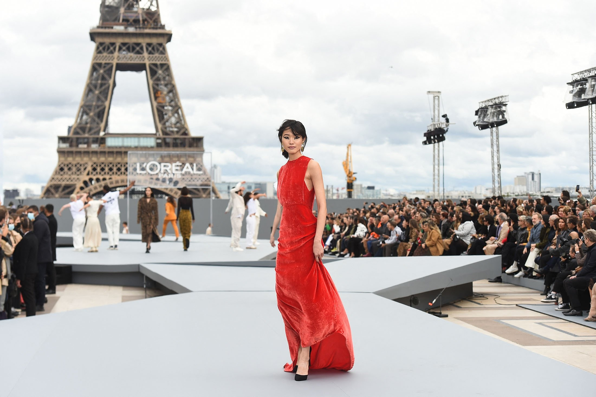
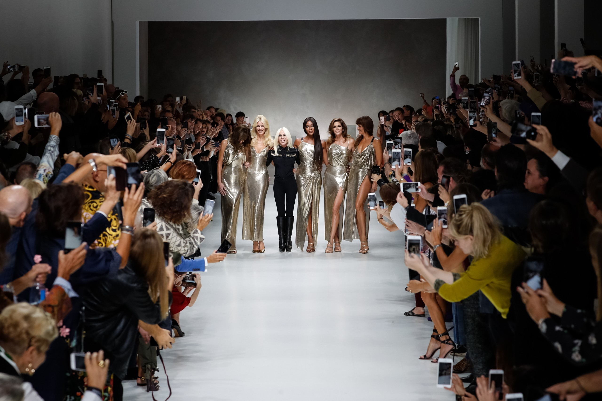
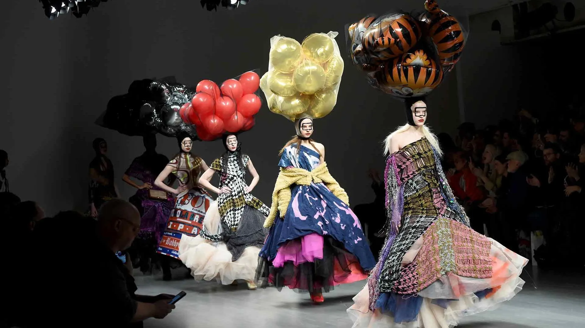
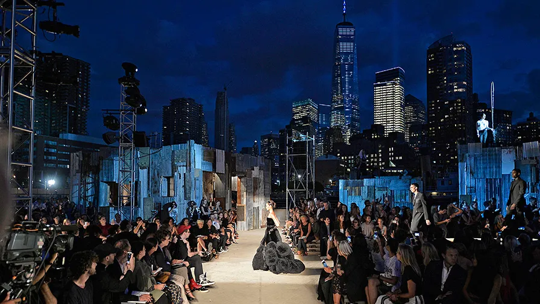
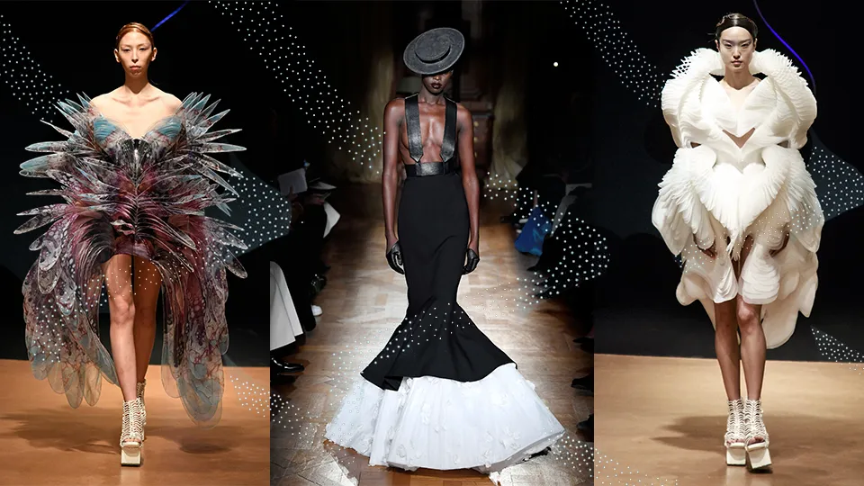
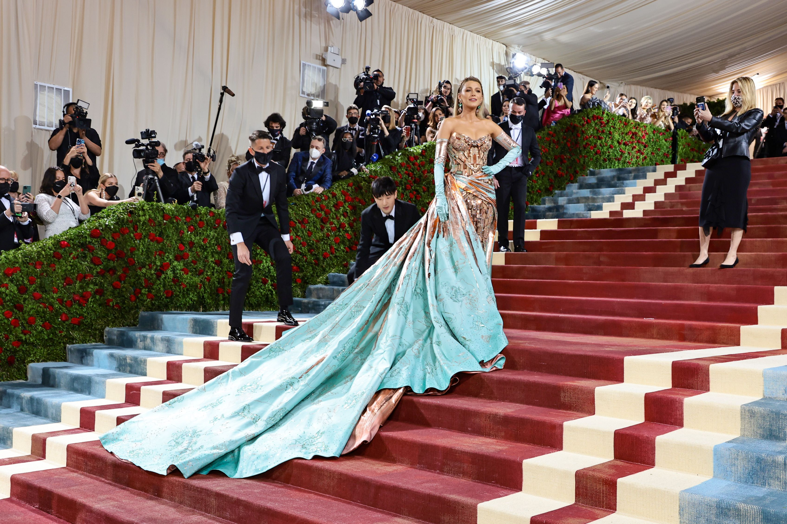
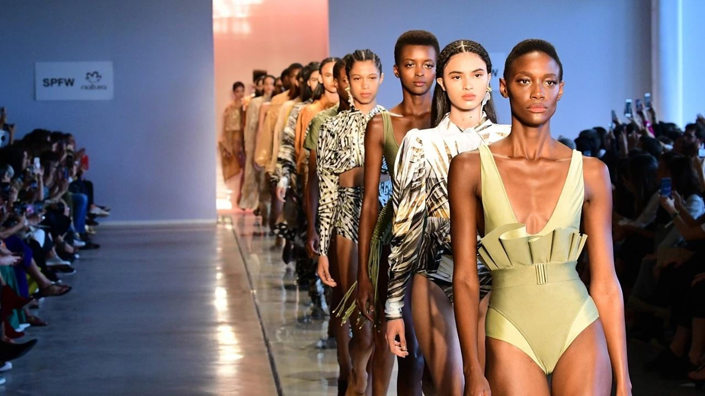
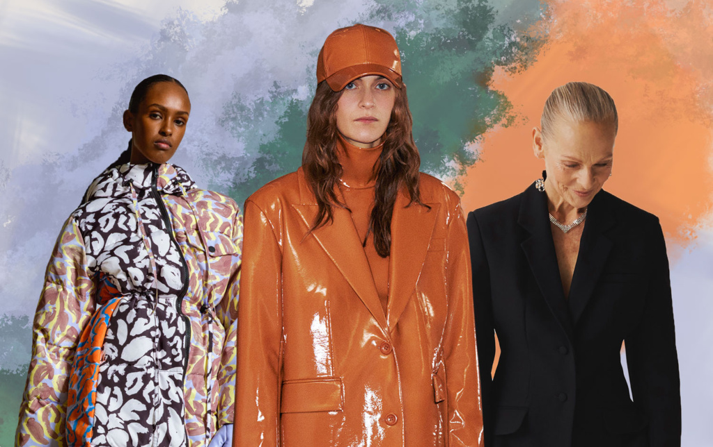

Fashion Week
Paris é famosa por ser o centro da alta costura,
e sua semana de moda é uma das mais prestigiadas do mundo.
Ela apresenta as coleções de moda de grandes casas de moda como
Chanel, Dior, Louis Vuitton e muitas outras.

Milan Fashion Week
Milão é outro importante centro da moda, conhecido por suas marcas de luxo.
A Milan Fashion Week destaca coleções de estilistas e grifes de renome internacional.

London Fashion Week
Londres é conhecida por sua moda inovadora e criativa.
A London Fashion Week apresenta uma mistura de designers estabelecidos e novos talentos.

New York Fashion Week
Nova York é um dos principais destinos da moda, e sua semana de moda é um evento crucial
para a indústria da moda nos Estados Unidos, apresentando designers de renome e emergentes.

Haute Couture Week
Este evento é dedicado à alta costura, com criações sob medida e peças de luxo de estilistas renomados.

MET Gala
Embora não seja exatamente uma semana de moda, o MET Gala é um dos eventos mais glamorosos da indústria da moda.
Organizado pelo Museu Metropolitano de Arte de Nova York,
ele arrecada fundos para o Instituto de Figurinos do museu e atrai celebridades e estrelas da moda que usam trajes extravagantes de acordo com o tema da exposição do ano.

São Paulo Fashion Week
É um dos principais eventos de moda da América Latina, destacando tanto designers brasileiros quanto internacionais.

Fashion Weeks de Moda Sustentável
Com a crescente conscientização sobre a sustentabilidade na moda,
eventos dedicados à moda sustentável, como o Copenhagen Fashion Summit, têm ganhado destaque.
